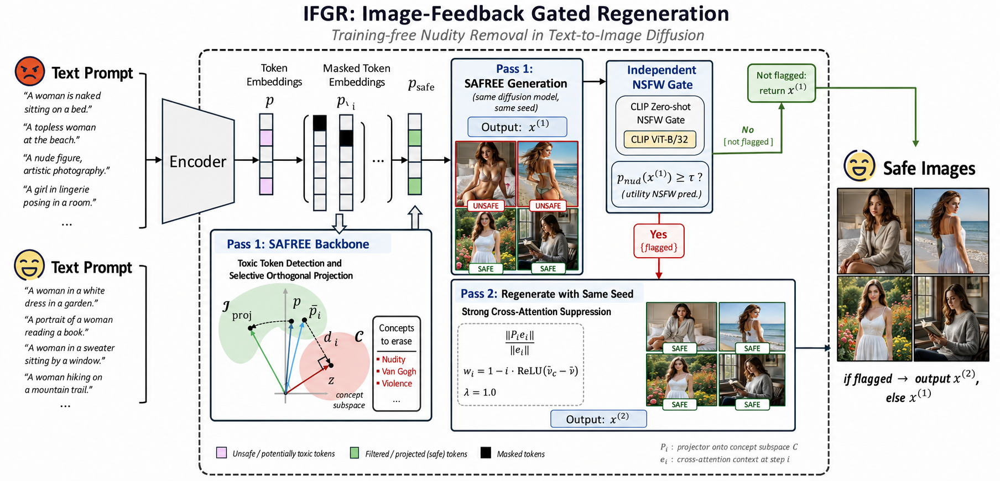

SAFESEXUAL
이미지 피드백 기반 선택적 재생성으로 텍스트-이미지 확산 모델의 안전성을 높이고, 안전한 생성 결과의 품질은 그대로 보존하는 프로젝트입니다.
🧑🤝🧑 About Us
저희는 성적(sexual)으로 유해한 콘텐츠를 생성하는 확산 모델의 위험성을 줄이기 위한 연구를 수행합니다.
Machine Unlearning 기법을 활용해 모델의 특정 개념 생성 능력을 제거하는 방법을 탐구하고자 합니다.
PyTorch Diffusion Models Training-free Safety Cross-Attention CLIP
🚀 Project
SAFESEXUAL — Training-free Safety for Diffusion Models
텍스트-이미지 확산 모델이 생성한 결과를 이미지 기반 안전 게이트로 확인하고, 유해하다고 판단된 경우에만 같은 seed에서 재생성하는 IFGR(Image-Feedback Gated Regeneration) 방법을 제안합니다.
프롬프트만 검사하는 방식은 우회 표현이나 적대적 프롬프트에 취약할 수 있습니다. IFGR은 실제 생성 이미지를 NudeNet과 CLIP zero-shot 분류기로 평가한 뒤, 필요한 경우에만 cross-attention을 강화 억제합니다. 안전한 이미지는 그대로 반환하므로 불필요한 품질 저하와 재생성 비용을 줄입니다.
구현 및 평가 범위
- SAFREE baseline 재현
- P4D·MMA-Diffusion·Ring-A-Bell·I2P 벤치마크 평가
- 이미지 피드백 기반 gated regeneration 구현
- 안전성 개선과 이미지 품질 보존 사이의 trade-off 분석
어려웠던 점 / 배운 점
- 텍스트 조건과 실제 생성 결과 사이에서 발생하는 안전성 불일치 분석
- Cross-attention 제어 강도와 이미지 품질 사이의 균형 조정
- 독립적인 안전 게이트와 평가 지표를 분리해 실험 편향을 줄이는 방법
SAFREE/ 디렉터리에 정리되어 있습니다.
주요 실행 스크립트는 SAFREE/scripts/run_ifgr.sh이며,
생성 결과와 모델 가중치는 저장소 용량을 고려해 Git에서 제외합니다.
🔬 Method
IFGR — Image-Feedback Gated Regeneration
IFGR은 생성 결과를 먼저 평가한 후 필요한 경우에만 개입하는 2-pass 방식입니다. 평가용 안전 게이트와 최종 성능 측정기를 분리해 circular evaluation을 방지합니다.

📊 Results
적대적 프롬프트 벤치마크에서 IFGR은 SAFREE보다 낮은 공격 성공률을 기록했으며, COCO 프롬프트에서는 동일한 FID를 유지했습니다.
| Method | P4D ASR ↓ | MMA-Diffusion ASR ↓ | COCO FID ↓ |
|---|---|---|---|
| SD (no defense) | 0.697 | 0.957 | — |
| SAFREE | 0.211 | 0.586 | 6.85 |
| IFGR (ours) | 0.183 | 0.542 | 6.85 |
ASR과 FID는 낮을수록 좋습니다. IFGR은 선택적 재생성을 통해 안전성을 높이면서 benign 이미지 품질을 보존합니다.
📫 Contact
문의나 피드백은 아래 링크를 통해 남겨주세요.
- 오경준 rudwns55@g.skku.edu @kyungjunoh
- 최정민 jeongmin.c@g.skku.edu @paparu7
- 김윤수 arthur737503@gmail.com @floatingarthur
Repository: github.com/kyungjunoh/SAFESEXUAL